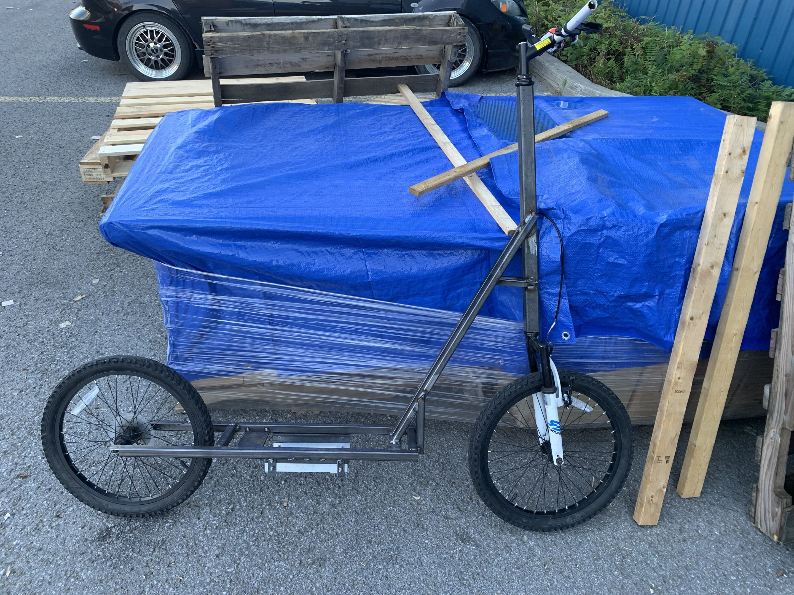

Project Detail
Electric Scooter Creation
A personal engineering project focused on the mechanical design and integration of a compact electric scooter build.
Project Description
This project involved designing and assembling an electric scooter by combining mechanical structure, powertrain selection, and system integration. The goal was to turn a concept into a functional prototype while improving the understanding of how different subsystems work together.
The work focused on the frame layout, motor integration, and the overall assembly of the scooter so that the design could be evaluated for practicality and manufacturability.
Environmentally, i tried to have a reduced impact by using an old bicycle heading for the garbage for the wheels, suspension, steering and braking system. The motor frame was designed with old scrap steel in a workshop and the motor, controller, battery and gears were purchased.
- Designed the scooter frame layout and overall structure
- Integrated the motor and related assemblies
- Included a secure case under the scooter for the motor, controller and battery
- Evaluated the build from an engineering and assembly perspective
Assembly
During the assembly stage, I learned how to MIG weld and safely operate several types of power tools. These hands-on skills helped me fabricate, modify, and assemble the scooter structure while gaining a better understanding of practical workshop techniques.

Mechanical Frame
The mechanical frame was designed to support the motor, battery, and other components while keeping the scooter compact and stable. The frame layout also had to leave enough room for the final components to be installed once they arrived.

Next step
A picture of the fully mounted motor will be added soon. I am currently waiting for the remaining parts to arrive before completing the motor installation and documenting the finished assembly.